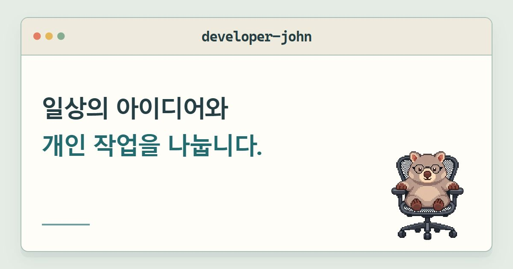
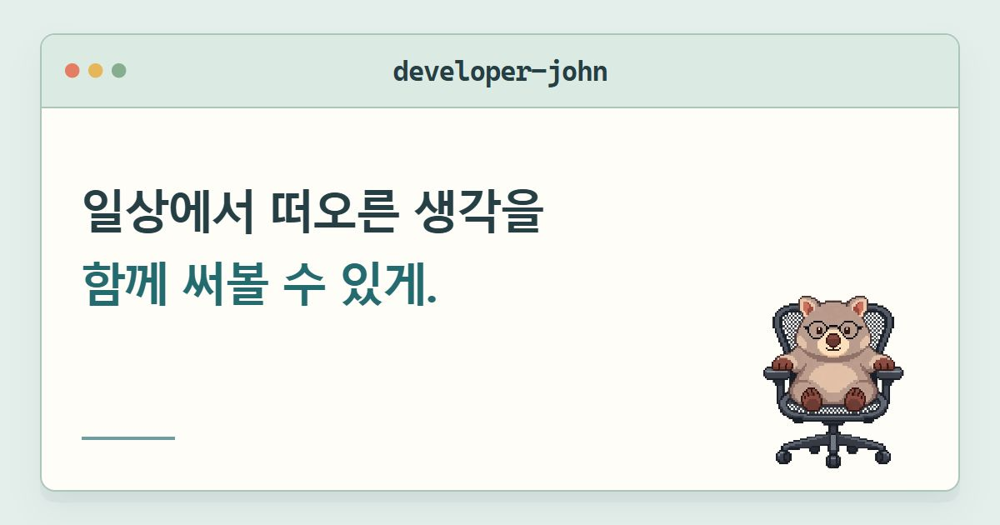
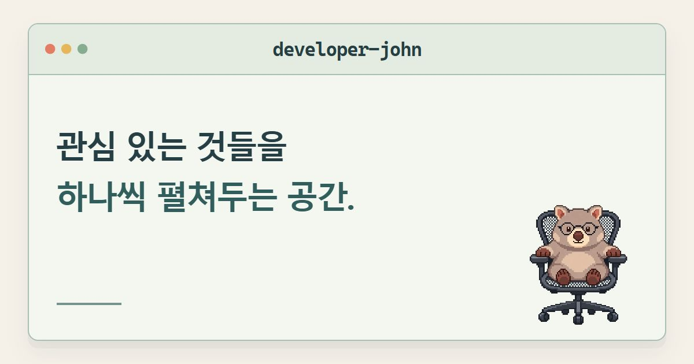
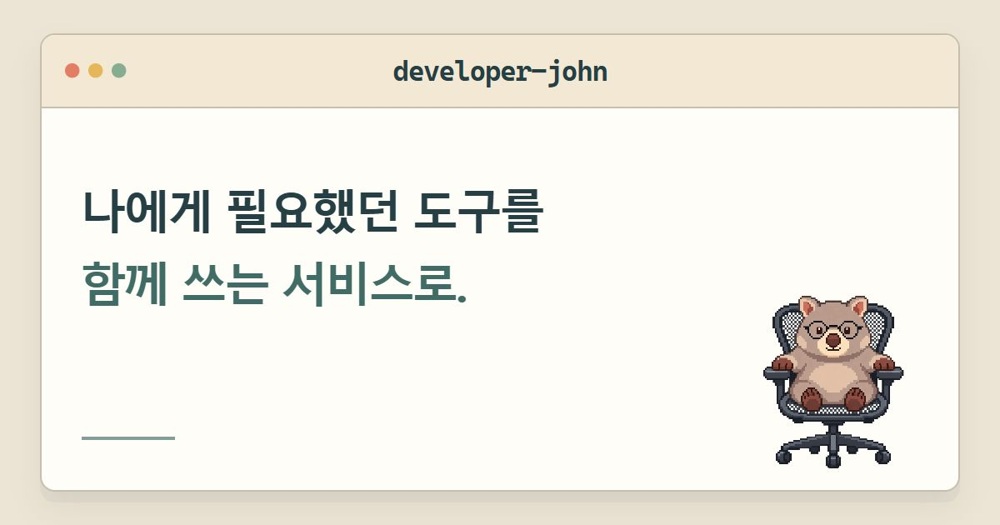
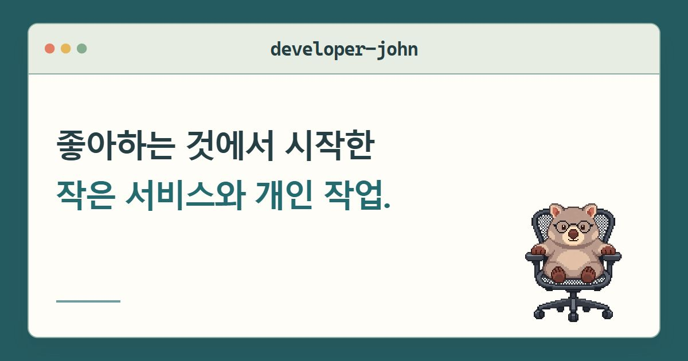
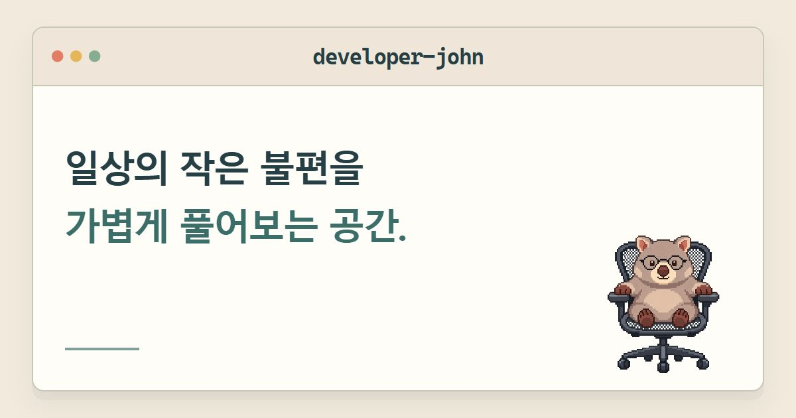
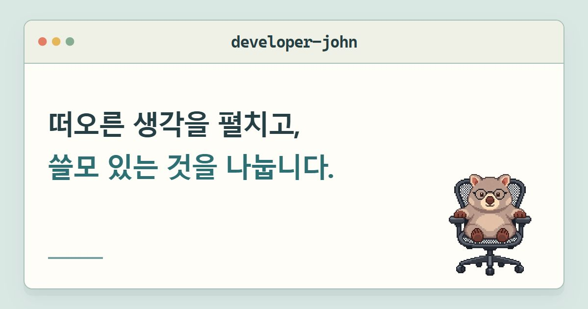
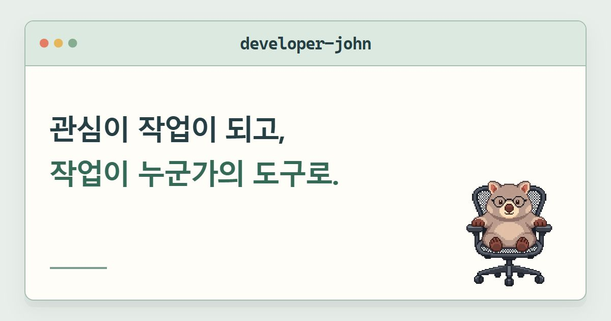
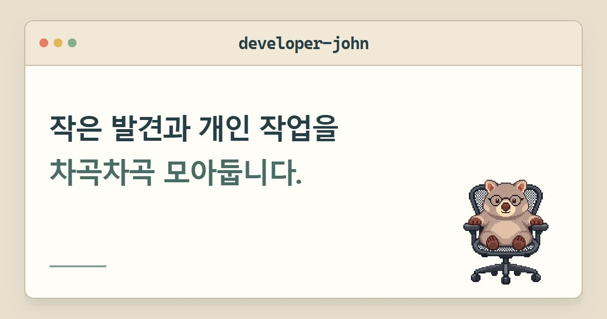
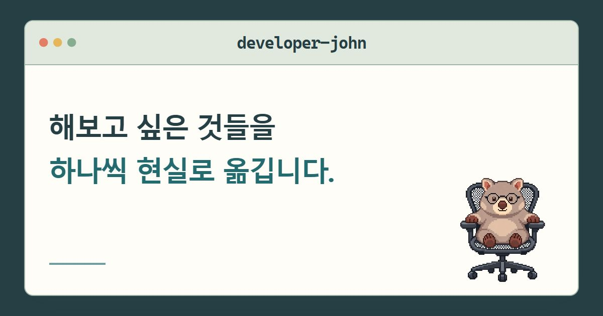

아이디어와 개인 작업
일상의 아이디어와 개인 작업을 나눕니다.

JOHN’S SPACE / TERMINAL COPY STUDIES
developer-john 제목바와 작은 웜뱃은 공통으로 두고, 소개 문구를 비교합니다.
01~03은 기존 제안, 04~10은 새 문구입니다. 이미지를 눌러 전체 그림을 확인하세요. 확대 화면에서 이전·다음 버튼이나 좌우 방향키로 시안을 바꿀 수 있습니다.
일상의 아이디어와 개인 작업을 나눕니다.

일상에서 떠오른 생각을 함께 써볼 수 있게.

관심 있는 것들을 하나씩 펼쳐두는 공간.

나에게 필요했던 도구를 함께 쓰는 서비스로.

좋아하는 것에서 시작한 작은 서비스와 개인 작업.

일상의 작은 불편을 가볍게 풀어보는 공간.

떠오른 생각을 펼치고, 쓸모 있는 것을 나눕니다.

관심이 작업이 되고, 작업이 누군가의 도구로.

작은 발견과 개인 작업을 차곡차곡 모아둡니다.

해보고 싶은 것들을 하나씩 현실로 옮깁니다.
